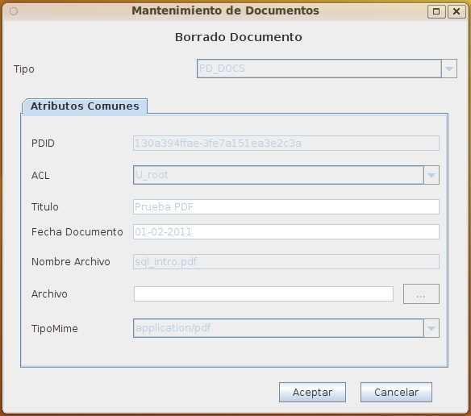

Al seleccionar el borrado de un documento se presentará esta pantalla que muestra toda la información del mismo, de forma que pueda confirmarse que es el documento correcto.
Un documento no podrá borrarse si esta bloqueado para edición o si el usuario no tiene permisos suficientes sobre el mismo.

Si se acepta el borrado, el documento pasa a la papelera, desde donde podrá recuperarse posteriormente o borrarse definitivamente
Ver: Papelera